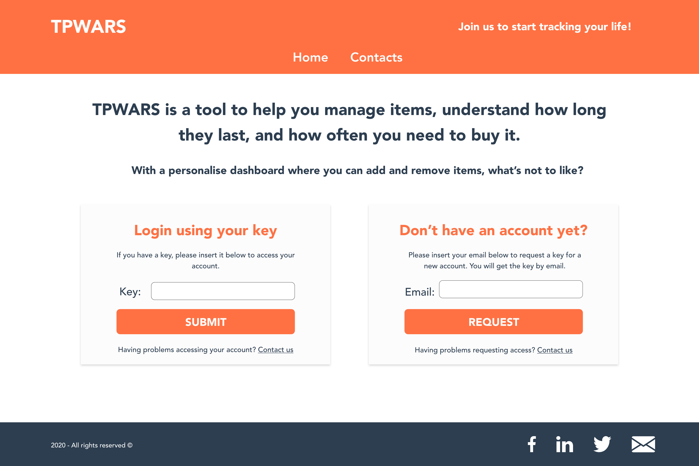
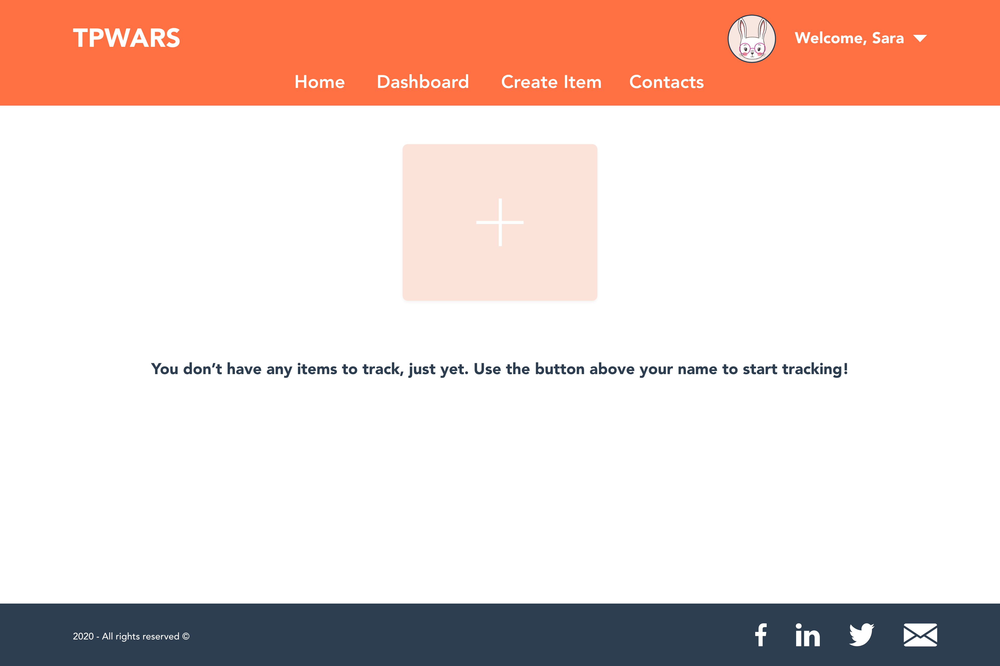
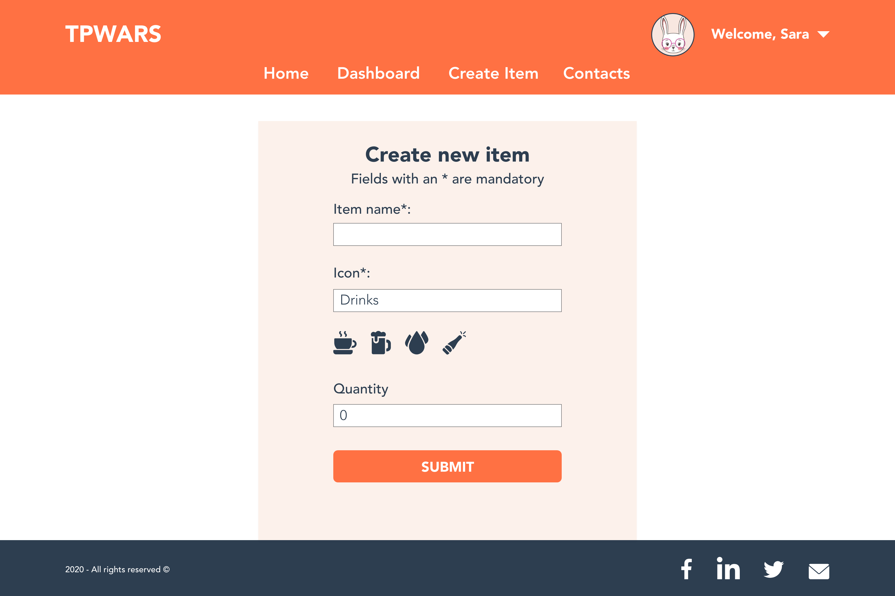
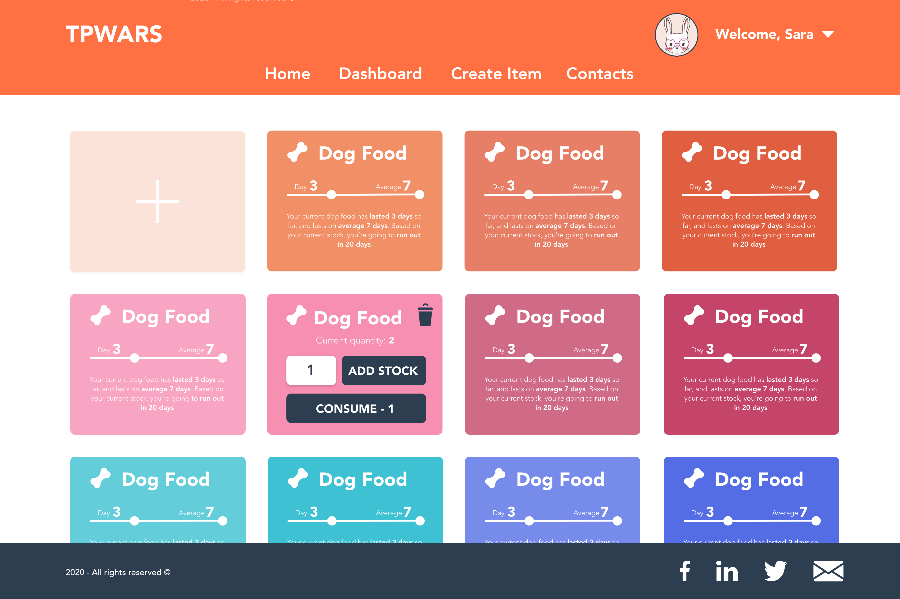

Mock ups
This project was born during Covid-19, with people stockpiling food and toilet paper which lead to an increasing in wasting shortage of essential items. What if each person could know exactilly how much of each item they need? And so, TPWARS was born.
For the purpose of this project I've only included mockups of the desktop version, but all the mockups, included mobile can be found here.
Full functional project can be seen here.
Home Page

All the pages have in commom the navigation bar, with the logo and menus, and the footer.
The menus on the home page are just home and contacts.
The main components of this page are the submit your key box, and the request a key, in case it's a new user. On the mobile version, the two boxes are stack on top of each other due to recuded screen space.
Empty Dashboard

Once the user submits the key, the navigation bar will still be visible but at this point, as the user is already signed in for the platform, the catchphrase disappears and is replaced with a salutation where the user can log out and edit their profile. The menus available also change from having only "Home" and "Contacts", to include the options of "Create new item" and "Dashboard", as logged in users need this functionality as well.
At this point, if the user doesn't have any items added to the dashboard, they will see a card with the plus sign, if they click on this card, they will be redirected to the create new item page.
Create new item
On the create item page, the user will insert the item name, such as Juice, this is a mandatory field, along with this the user will need to select an item to represent the item, also a mandatory field. To select the item, the user will need to start typing, for example, drinks. The icons available for that category will show up as the user types. To select an item, the user needs to click on the icon they want, that icon will change colour to orange, to indicate that icon is selected. There is also a quantity field, however, the default quantity is 0 as at the time the user creates the item, they might not want to add stock. they will be able to do that later on the item card.
Full dashboard, consume, add stock & delete item

This is the main page of the interface, the dashboard. Here the user will be able to see several cards with each card representing an item. The empty card that allows the user to create a new item will still be visible.
The front of the card has the item name and icon that the user selected on the create new item page. Along with this the user also will see an information bar, where it's represented the current item life and the average item life for that item type. The current item life circle moves as the days go by, giving the user an idea a quick visual representation if the item is lasting more or less than the average.
There is also a descriptive text, where it's included the current item life, the average and based on the existing stock and average life when is expected for the user to run out of that item.
If the user clicks on the card, the card will turn around. On the back of the card, it's still visible the item name and icon, so the user knows which item they are editing. Here, it's possible to see the current existing quantity of an item. It's also possible for the user to add more stock, or for the user to consume one unit of the icon.
For the consume button, I've opted for only allow the user to consume one item at the time, even though the user can click several times to consume more than one. However, some of the information such as the average is calculated based on the date the user consumed the items, this means if the user forgets to consume an item at the time and adds all at the same time, the data presented will be skewed.
To go back to the front of the card, all the user needs to do is to click on the card again.